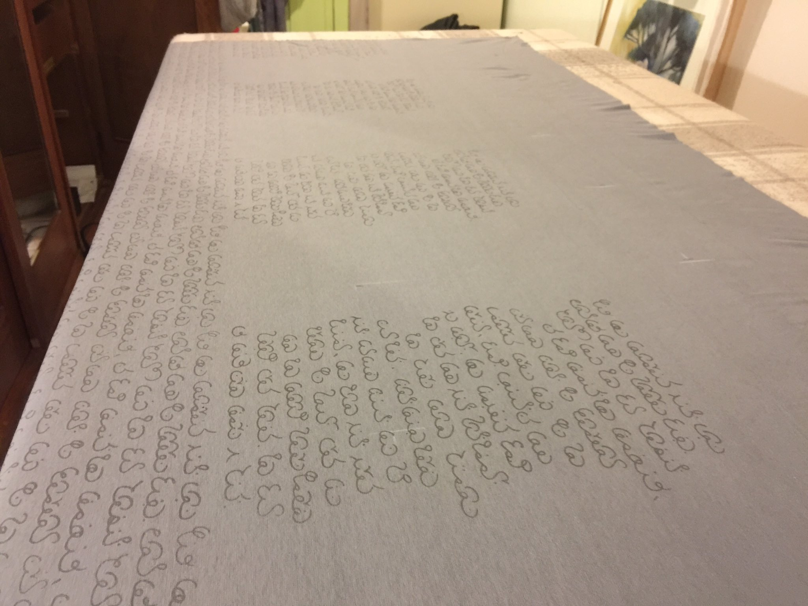

Ani
The Ani script
Welcome. How did you get here? You might be the only one here. Ani is an invented script, just a little piece of mystery in the world. It's not hard to write, it flows nicely just like a natural language.
History
Ani was first used for passing secret letters in class. It was invented in a history lesson, which might
explain some of the Greek letters like φ and α which you can still see today. Later it
borrowed some Arabic and pieces from some south Indian scripts like Telugu.
Read more about the history of Ani
What's written on that shirt?
A few people seem to be wearing shirts with Ani script on them. It's a text adapted from the book 'The Land Behind the World' by Anne Spencer Parry. Here's a shot of the screenprinting process:
Alphabet
The Ani alphabet is based on seven shapes. Each letter has an initial form (for the start of words), a
medial form (for the middle of words), and a final form (for the end). There is also an independent
form, if you want to write a letter without connecting it to anything. Even the upside down form is used
sometimes, for example after S.
There are special letters for th, sh and ch. C, q and x are not normally used when writing English.
For example "Lucy's quick xerox copier" becomes "Lusy's kwikk zeroks kopier".
Letters can be doubled by putting a dot underneath them.
Letters
Writing Ani
Ani is written anticlockwise. Usually this means left to right, but there's no reason not to write
it in any direction the basic shapes allow, even in a spiral.
As long as it's legible, anyone can make up their own quirky ways of writing Ani. A common
quirk is not to use the medial forms of I, S or R sometimes and instead to use the final form,
followed by the "upside down" form of the next letter (the form at the top of the shape). It also
looks nicer to split words into sections, rather than using too many medial forms in a row.
External links
If Ani doesn't suit your invented script needs, you can find a different one:
Back to top